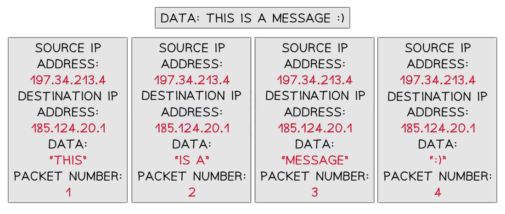
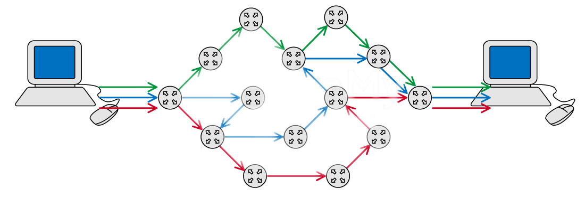
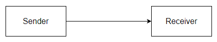
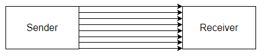
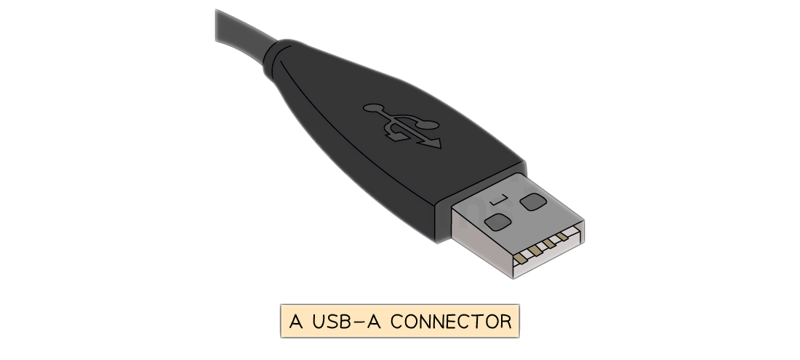
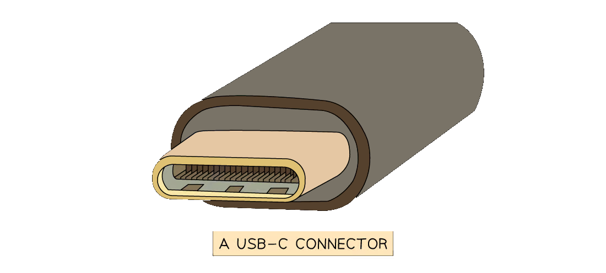

Data Packets
What are packets?
- Packets are small ‘chunks’ of data that make up a larger piece of data that has been broken down by the TCP protocol so that it can be transmitted over the internet
- TCP stands for Transmission Control Protocol and is used for organising data transmission over networks
- Small ‘chunks’ of data are easier and quicker to route over the internet than big ‘chunks’ of data
- Routing involves finding the most optimal path over a network
- Data can include anything from text, images, audio, video, animations, etc, or any combination of these
What do packets contain?
- A packet consists of:
| Header | Payload | Trailer |
|---|---|---|
| Source IP address | Actual data being transported | Additional security information (less common) |
| Destination IP address | End of packet notification | |
| Packet number |
- To transmit the message “This is a message:)”over the internet, TCP might break the message down into 4 packets

- Each packet contains a:
- source IP address
- destination IP address
- payload (the data)
- a packet number
- Error checks make sure that when a packet is received there is minimal or no corruption of the data
- Corruption is where packet data is changed or lost in some way, or data is gained that originally was not in the packet
- Read error detection methods for more detail on how data packets can be checked to ensure corruption is avoided/minimised
Packet Switching
What is packet switching?
- Packet switching is a method of sending and receiving data (packets) across a network
- Packet switching can be broken down into five stages:
| Stage | Overview | Detail |
|---|---|---|
| 1 | Data is broken down into packets | • Learn more by reading our data packets revision note |
| 2 | Packets are assigned a header | |
| 3 | Each packet makes its way to the destination | • Like normal car traffic, data traffic builds up on the internet • Routers can see this and decide to send a packet down a different route that avoids traffic |
| 4 | Routers control the routes taken for each packet | • Routers know which nearby router is closer to the destination device |
| 5 | Packets arrive and are reordered correctly | • If a packet does not reach its destination the receiver can send a resend request to the sender to resend the packet |

What are the advantages of packet switching?
- Interference and corruption are minimal as individual packets can be resent if they are lost or damaged
- The whole file doesn’t need to be resent if a corruption occurs, this saves time and internet bandwidth
- Packet switching is quicker than sending a large packet as each packet finds the quickest way around the network
- It’s harder to hack an individual’s data as each packet contains minimal data, and travels through the network separately
A local market shop wishes to arrange a delivery of goods from a supplier. Anna, the shop owner, decides to send an email to request the delivery of the goods at a certain date and time.
Describe how packet switching is used to send this email and how it can be protected from corruption.
[8]
Answer
- The business email is first broken down into packets which are given a source address (where it’s come from) and a destination address (where it’s going to) [1]
- Each packet receives a packet number so that the email can be reassembled when it reaches its destination [1]
- Each packet also receives an error check such as a parity bit. A parity bit checks whether any bits have been flipped due to corruption [1]
- Each packet is sent over the internet via routers. Routers contain routing tables that determine the next closest router to the destination [1]
- Packets may take different routes depending on internet traffic and arrive at their destination in any order [1]
- Packets are checked for errors using the error checks and missing packets can be requested to be resent [1]
- Once all packets have been received then they can be put together in order using the packet numbers [1]
- Once assembled the original email can be read by the other business [1]
For high marks make sure your answer is coherent, that is it follows logically from one point to the next.
Some marks depend on previous points you have made.
Explaining parity bits without mentioning error checking first may not gain you additional marks
Data Transmission
What is data transmission?
- Data transmission is the process of transferring data from one device to another using a wired or wireless connection
- Wired data transmission can be completed in two ways:
- Serial
- Parallel
Serial & Parallel Transmission
What is serial & parallel transmission?
- Serial and parallel are methods of transmitting data (bits) from a sender to a receiver
- Each method determines how many bits can be transmitted at once
Serial transmission
- A stream of bits is sent in sequence, one after the other, along a single wire
- USB is an example of a wired serial connection

Parallel transmission
- Multiple bits are sent simultaneously, with each bit travelling on its own separate wire
- Parallel transmission is usually synchronous, using a clock signal to keep data aligned
- However, bits can arrive at slightly different times due to skew (timing differences between wires)
- A traditional printer cable is an example of a wired parallel connection

Advantages and disadvantages of serial & parallel transmission
| Transmission | Advantages | Disadvantages |
|---|---|---|
| Serial | • Reliable over longer distance • Cheaper to setup • Low interference |
• Slow transmission speed |
| Parallel | • Very fast transmission speed | • Only used on short distances • Prone to high interference |
Simplex, Half-Duplex & Full-Duplex Transmission
What is simplex, half-duplex & full-duplex transmission?
- Simplex, half-duplex and full-duplex describe the direction in which data can be transmitted between a sender and receiver
Simplex transmission
- Data travels in only one direction
- Sending data from a computer to a monitor is an example of simplex transmission
Half-duplex transmission
- Data can travel in both directions, but only one direction at a time
- A printer cable which waits for the data to be received before sending back a ‘low ink’ message is an example of half-duplex transmission
Full-duplex transmission
- Data can travel in both directions at the same time
- Network cables can send and receive data at the same time and are examples of full-duplex data transmission
- Full-duplex is used in local and wide area networks
Advantages and disadvantages of simplex, half-duplex & full-duplex transmission
| Transmission | Advantages | Disadvantages |
|---|---|---|
| Simplex | • Simple and low-cost for one-way communication | • Cannot support two-way communication |
| Half-duplex | • Cheaper than full-duplex for two-way communication | • Slower due to one-direction-at-a-time |
| Full-duplex | • Fast, supports simultaneous two-way data transfer | • More expensive to implement |
- Wires can be combinations of serial, parallel, simplex, half-duplex and full-duplex
| Simplex | Half-duplex | Full-duplex | |
|---|---|---|---|
| Serial | Serial-Simplex | Serial-Half-duplex | Serial-Full-duplex |
| Parallel | Parallel-Simplex | Parallel-Half-duplex | Parallel-Full-duplex |
- Serial-Simplex
- Data is transmitted one bit at a time in one direction only on a single wire
- Serial-Half-duplex
- Data is transmitted one bit at a time, and can flow in both directions, but not at the same time
- This typically uses a single shared wire.
- Serial-Full-duplex
- Data is transmitted one bit at a time in both directions simultaneously, but this requires two wires, one for each direction.
- Parallel-Simplex
- Multiple bits are transmitted simultaneously in one direction only, using multiple wires
- Parallel-Half-duplex
- Multiple wires send multiple bits of data in both directions, but only one direction at a time
- Parallel-Full-duplex
- Multiple wires send multiple bits of data in both directions simultaneously
A company has a website that is stored on a web server
The company uses parallel half-duplex data transmission to transmit the data for the new videos to the web server.
Explain why parallel half-duplex data transmission is the most appropriate method.[6]
Answer
- Parallel would allow for the fastest transmission [1]
- as large amounts of data [1]
- can be uploaded and downloaded [1]
- but this does not have to be at the same time [1]
- Data is not required to travel a long distance [1]
- Therefore, skewing is not a problem [1]
Any four of these points qualifies as a full answer, however make sure your answer is cohesive.
Saying “ Parallel would allow for the fastest transmission but this does not have to be at the same time ” would qualify as one mark as only the first part makes sense and follows logically
Universal Serial Bus (USB)
What is USB?
- The Universal Serial Bus (USB) is a widely used standard for transmitting data between devices
- It is a serial communication method, and it operates asynchronously
- Many devices use USB such as:
- Keyboards
- Mice
- Video cameras
- Printers
- Portable media players
- Mobile phone
- Disk drives
- Network adapters
- Different USB connector types exist for different devices
- The letters refer to the physical shape and design of the USB connector:
- USB-A - Commonly used for flash drives, mice, keyboards, external HDD
- USB-B - Found in printers, scanners, and older external storage devices
- USB-C - Latest standard, known for it’s small size, transfer speeds, and it’s ability to carry power
- The term USB can also be followed by numbers (USB 2.0, 3.0, 4 etc.)
- The numbers refer to the generation of USB technology, which determines the speed and performance:
- USB 1.1 - 12 Mbps (very slow)
- USB 2.0 - 480 Mbps (very common but slower compared to modern versions)
- USB 3.0/3.1/3.2 - 5 Gbps to 20 Gbps (much faster, used for external HDDs and gaming devices)
- USB4/ USB4 2.0 - Up to 80 Gbps (the latest and fastest, used for high speed data transfer)
- When a device is connected to a USB port the computer:
- Automatically detects that the device has been connected
- Looks for the correct driver:
- If the driver is already installed, the appropriate device driver is loaded so that the device can communicate with the computer
- If the device is new, the computer will look for a compatible device driver
- If one cannot be found, the user must download and install an appropriate driver manually


Advantages and disadvantages of USB
| Advantages | Disadvantages |
|---|---|
| Devices are automatically detected and drivers are automatically loaded for communication | The maximum cable length is roughly 5 metres meaning it cannot be used over long distances, limiting its use |
| Cable connectors fit in only one way. This prevents incorrect connections and ensures compatible data transmission |
Older versions of USB have limited transmission rates for example USB 2.0 has 480Mbps |
| As USB usage is standardised, there is a lot of support available online and from retailers | Very old USB standards may not be supported in the near future (USB 1.1, USB 2.0, etc) |
| Several different data transmission rates are supported. The newest transmission rate as of 2022 is USB4 2.0 with 80 Gbps (81,920 Mbps, 170x faster than USB 2.0) | |
| Newer USB standards are backwards compatible with older USB standards |
Julia uses a USB connection to transfer data onto her USB flash memory drive.
One benefit of using a USB connection is that it is a universal connection.
(i) State two other benefits of using a USB connection.[2]
(ii) Identify the type of data transmission used in a USB connection.[1]
Answers
(i) Any two of:
- It cannot be inserted incorrectly [1]
- Supports different transmission speeds [1]
- High speed transmission [1]
- Automatically detected [1]
- Powers the device for data transfer [1]
(ii)
- Serial [1]